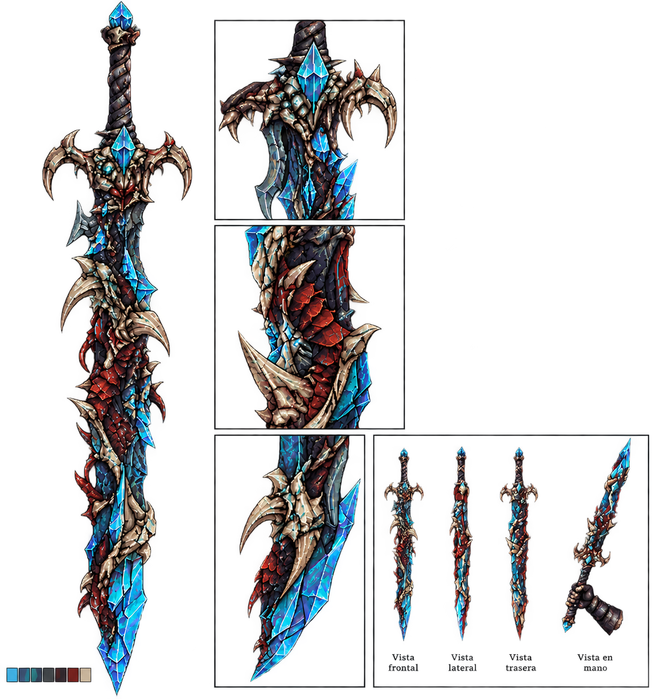
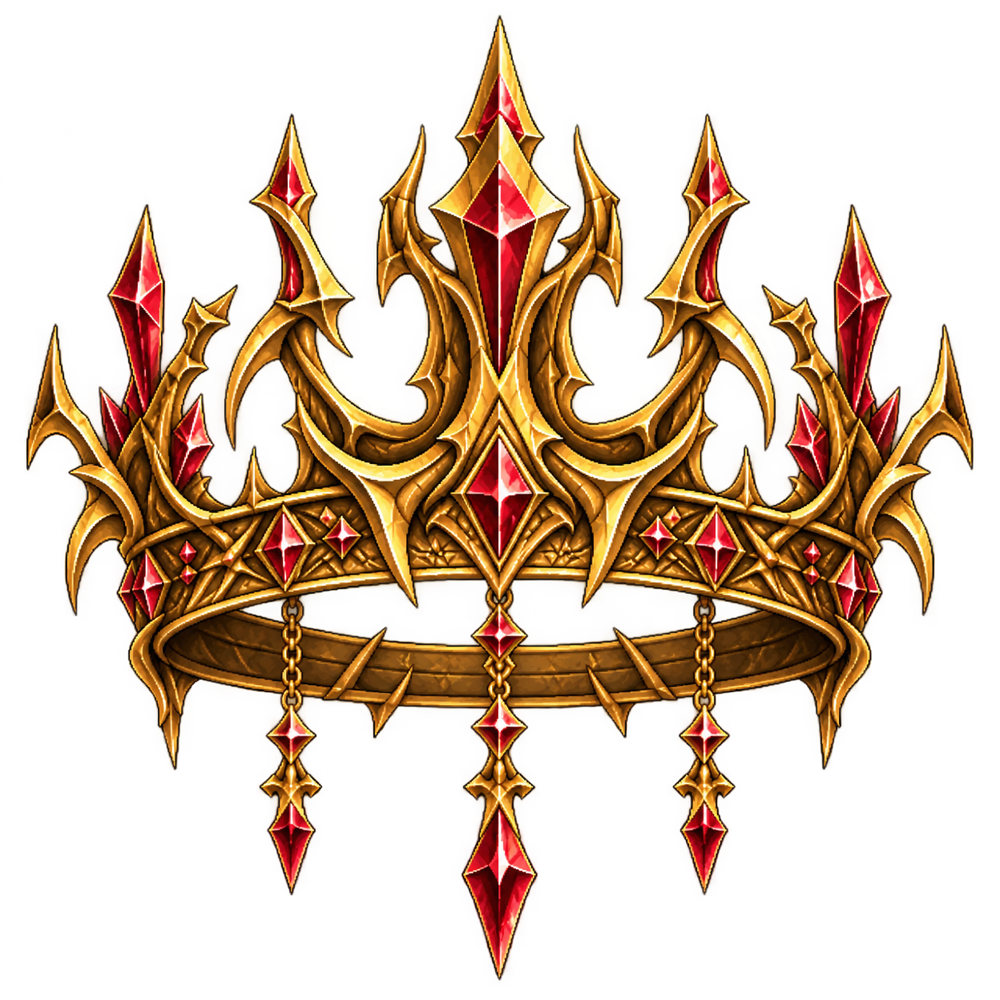

Boss final: El Rey
Los experimentos
Durante su reinado, el Rey comenzó a buscar una forma de prolongar su vida indefinidamente. Después de descubrir las propiedades del Cristal Vital, comprendió que las criaturas de Aetheria poseían una fuerza vital mucho mayor que la de los seres humanos.
Sin embargo, descubrió que el cuerpo humano no podía soportar grandes cantidades de Cristal Vital sin sufrir consecuencias. En lugar de abandonar sus investigaciones, comenzó a realizar experimentos para combinar las características de los seres humanos con las de las criaturas.
Los experimentos consistían en alterar cuerpos humanos mediante la incorporación de Cristal Vital y características biológicas de diferentes criaturas. El objetivo era crear un organismo capaz de soportar grandes cantidades de poder y utilizarlo para regenerar su propio cuerpo.
Para llevar a cabo estas investigaciones, el Rey utilizó personas de manera clandestina. Muchos de los habitantes que desaparecían de Aetheria eran llevados a instalaciones ocultas bajo el castillo, donde eran utilizados como sujetos de experimentación.
Con el paso de los años, el Rey comenzó a experimentar también con su propio cuerpo. La combinación de diferentes Cristales Vitales le permitió regenerarse y prolongar su vida, pero tuvo un efecto irreversible: su cuerpo comenzó a adoptar características de las criaturas utilizadas en sus experimentos.
Lo que comenzó como un intento de conservar su humanidad terminó destruyéndola poco a poco. Cuanto más tiempo permanecía con vida, más se alejaba de aquello que alguna vez había sido.
Fases del combate
La batalla contra el Rey se divide en varias fases. A medida que recibe daño, pierde el control sobre el Cristal Vital acumulado durante décadas y su cuerpo comienza a adoptar características de las criaturas utilizadas en sus experimentos.
Fase 1 - El Rey
El enfrentamiento comienza contra el Rey en su forma aparentemente humana. A pesar de su avanzada edad, conserva su juventud, fuerza y habilidad extraordinarias.
Utiliza una espada y combate con movimientos precisos y calculados. Sus ataques son rápidos, difíciles de anticipar y castigan los errores del jugador.
En esta fase, el Rey todavía controla completamente su cuerpo y no necesita recurrir a las habilidades obtenidas mediante sus experimentos.
Fase 2 - Regeneración
Después de recibir una cantidad considerable de daño, el Rey utiliza el Cristal Vital acumulado en su cuerpo para regenerar sus heridas.
Sus heridas se cierran rápidamente y recupera parte de su salud, revelando al jugador la verdadera naturaleza de su poder.
El jugador deberá encontrar la forma de interrumpir su regeneración para poder avanzar en el combate.
Fase 3 - Mutación
Al verse obligado a utilizar grandes cantidades de Cristal Vital, el cuerpo del Rey comienza a perder el control sobre las diferentes energías que contiene.
Partes de su cuerpo comienzan a transformarse y adquiere características de las criaturas utilizadas en sus experimentos.
Sus ataques cambian y comienza a utilizar habilidades propias de diferentes criaturas. Algunas de estas características pueden ser reconocidas por el jugador debido a los enfrentamientos que tuvo durante su aventura.
Fase 4 - El Rey de las Bestias
La transformación continúa hasta que el Rey deja de parecer completamente humano.
Su cuerpo combina características de diferentes criaturas y su poder aumenta considerablemente. Sin embargo, conserva su inteligencia, capacidad de razonar y experiencia como guerrero.
Esta fase convierte al Rey en un enemigo mucho más impredecible, capaz de alternar entre diferentes tipos de ataques y habilidades.
El jugador deberá adaptarse constantemente a sus transformaciones para encontrar oportunidades de ataque.
Fase 5 - El Último Rey
Durante la fase final, el jugador consigue interrumpir las fuentes que alimentan la regeneración del Rey.
Sin la posibilidad de recuperar sus heridas, su cuerpo comienza a colapsar y las transformaciones empiezan a desaparecer.
El Rey vuelve parcialmente a su forma humana, pero ya no posee la capacidad de regenerarse.
En lugar de utilizar las habilidades obtenidas mediante sus experimentos, vuelve a depender de aquello que lo convirtió en Rey: su experiencia, su espada y décadas de entrenamiento.
Esta última fase representa el enfrentamiento definitivo. Sin regeneración ni criaturas que puedan sostenerlo, el jugador debe derrotar al hombre que se negó a aceptar su propia muerte.
La Caída del Rey
La derrota del Rey provoca un cambio que afecta a todo Aetheria. Con su muerte, el poder que mantenía la niebla comienza a desaparecer lentamente.
Durante años, la niebla había rodeado la isla e impedido que sus habitantes pudieran ver qué existía más allá de sus costas. Sin el Rey para mantenerla, la niebla comienza a disiparse y el horizonte vuelve a ser visible.
Por primera vez, los habitantes de Aetheria descubren que nunca estuvieron solos.
A lo lejos pueden observarse cuatro grandes islas, hasta entonces completamente ocultas por la niebla. Cada una posee sus propios territorios, criaturas, recursos y habitantes, abriendo la posibilidad de explorar nuevas regiones y continuar la historia de Beyond the Mist..
Recompensas
Al derrotar al Rey, el jugador recibe dos recompensas especiales:
Espada del Rey
La Espada del Rey es el arma utilizada por el Rey durante la primera y última fase del combate.
Tras su derrota, el jugador puede recogerla. Sin embargo, la espada ya no se encuentra en su estado original. Los años de experimentación con Cristal Vital han provocado que el arma quede parcialmente deformada, incorporando restos y fragmentos de las criaturas utilizadas por el Rey.

Partes de huesos, escamas, garras y otros restos de criaturas se encuentran fusionados con la estructura de la espada, convirtiéndola en un arma única y reconocible.
A pesar de su apariencia deformada, conserva gran parte de su poder y se convierte en una de las armas más especiales que puede obtener el jugador.
Corona del Rey
Un objeto decorativo que puede equiparse sobre la cabeza del personaje. La Corona del Rey no es solamente un objeto estético. Mientras el jugador la lleve puesta, los habitantes de Aetheria reconocerán que quien la porta derrotó al antiguo rey.

Cuando un aldeano vea al jugador usando la corona, realizará una reverencia como señal de respeto y reconocimiento. Esto genera una pequeña interacción especial con los habitantes y permite que el jugador note que sus acciones tuvieron consecuencias en el mundo.